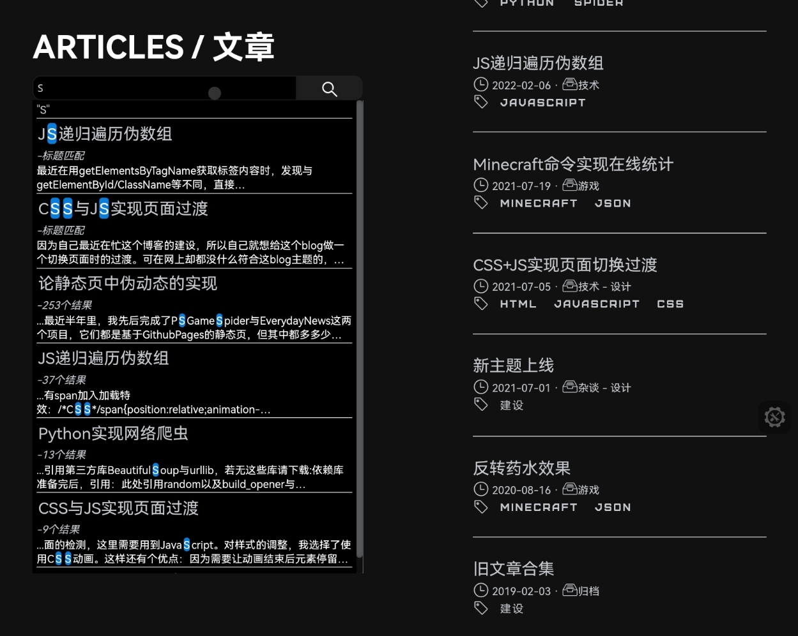

静态站实现全站搜索
2022-08-25 • 技术 - 设计 • JAVASCRIPT PYTHONJSON •#前言
全站搜索这一功能我想加入到我的博客中不是一年两年的事了。但因自己现在弃用Hexo转而自己做博客，这两年搜索这个功能就一直未能实现。
最近自己偶然有新想法，就给实现了。效果还不错，现在搭配Github Actions使用，可以实现新文章自动索引，实现了自动化。
#效果
搜索演示
要想充分体验，还是自己去试试的好。转到Articles索引页
#实现方法
数据生成
要想在静态页搜索，就要自己创建索引。这里使用python来创建一个JSON，存储全站文章信息：
# -*- coding: utf-8 -*-
## 使用有问题请到github.com/ravelloh/RPageSearch提ISSUE
### Author: RavelloH
#### LICENCE: MIT
##### RPageSearch
import os
from bs4 import BeautifulSoup
## 设置目标
target = './articles/' # 目录位置
layers = 1 # 遍历层数
targettype = 'html' # 文件后缀名(只支持html)
main_structure_head='{"articles":['
main_structure_end=']}'
inner_structure_1='{"title":"'
inner_structure_2='","path":"'
inner_structure_3='","time":"'
inner_structure_4='","text":"'
inner_structure_5='"}'
## 打开目标目录
targetfile = []
for i in os.listdir(target):
if '.' not in i:
for k in os.listdir(target +i):
if targettype in k:
targetfile.append(target + i + '/' + k)
## 按时间顺序排序
targetfilenum = []
for i in targetfile:
targetfilenum.append(i[11:19])
targetfilenum.sort(reverse=True)
targetfile=[]
for i in targetfilenum:
targetfile.append('./articles/'+str(i)+'/index.html')
## 解析重构目标文件
inner_structure_cache=[]
inner_structure_text=''
for i in targetfile:
inner_structure_text = ''
with open(i,'r') as f:
filecontent = BeautifulSoup(f.read(),'html.parser')
textlist = filecontent.find_all(name='p')
title = filecontent.find_all(name='h2')
titlelen=len(title)
length = len(textlist)
for j in range(length):
inner_structure_text=inner_structure_text+textlist[j].get_text()
time = i[-19:-11]
time = time[0:4]+'-'+time[4:6]+'-'+time[6:8]
title = title[titlelen-1]
path = i[1:][:-10]
inner_structure_text=inner_structure_text.replace(' ','').replace('\n','').replace('"','"').replace('\\','')
inner_structure_all = inner_structure_1 + str(title.get_text()) + inner_structure_2 + str(path) + inner_structure_3 + str(time) + inner_structure_4 + inner_structure_text + inner_structure_5
inner_structure_cache.append(inner_structure_all)
## 重构完整JSON
main_structure = main_structure_head
for i in inner_structure_cache:
main_structure = main_structure + i + ','
main_structure = main_structure[:-1] + main_structure_end
total_str = 'var SearchResult = "' + main_structure.replace('"','\\"') + '"'
print(total_str)
# 写入JSON#文件
with open('./js/searchdata.js','w+') as #1:
f1.write(total_str)
上述代码实现了将articles目录下所有文件夹中以.html后缀结尾的文件中的p标签中文字提取出来，并顺便提取h2的文章标题。
不过因为python中直接使用os.dirlist扫出的文件名是乱序，为方便后续排序还需要按照时间顺序排序，其中因为我的文章存储方式是以时间排序的，如这篇文章的存储结构就是/articles/20220825/inxex.html，因为时间可以直接从文件夹中读出，时间排序比较方便，7行就搞定了，如果是其余方式也同理。
上述代码运行后，得出的应该是类似于如下结构的json:
{
"articles":[{
"title":"文章标题","path":"相对路径","time":"更新时间","text":"所有正文"
}, {
"title":"文章标题","path":"相对路径","time":"更新时间","text":"所有正文"
}, {
"title":"文章标题","path":"相对路径","time":"更新时间","text":"所有正文"
}]
}
这样全站搜索的json就生成完成了，为了方便引用，上述代码最后会将这个json改为js格式，并转义"字符。
这样，就可以在后续处理搜索时直接引用js，其中json存储在变量SearchResult中。
搜索处理
有了json，搜索就只需在前端实现了。这样可以脱离服务器的限制，唯一限制速度的是访客的设备性能。
但因为这里只是简单的字符串搜索，性能需求并不大，下面我写的代码虽说并没有做到极限优化，但也通过多层次搜索降低了一部分运算量，可以做到实时搜索输入数据。
以下是HTML与JavaScript代码。当然，这跟我博客上的不一样，博客上还加入了一些css过渡之类的，不过本篇重点也不是css，如果有需求可自行到博客articles页F12看看。博客源代码在github，见此。
<div class='searchbox'></span>
<form class="searchbox" onSubmit="return check();" autocomplete="off">
<input type="text" placeholder="从所有文章内检索..." name="search" oninput="searchtext()" onpropertychange="searchtext()">
<button type="button" id='searchbutton'><span class="iconfontmini icon-search"></span></button>
<div class="resultlist" id="resultlist">
<i>- 搜索 -</i><hr><p align="center">
输入关键词以在文章标题及正文中查询
</p>
<hr><a href="https://github.com/ravelloh/RPageSearch">Search powered by RavelloH's RPageSearch</a>
</div>
</form>
</div>
let input = document.querySelector("input[type='text']");
let result = document.getElementById('resultlist')
let button = document.getElementById('searchbutton')
obj = JSON.parse(SearchResult);
function searchtext() {
result.innerHTML = input.value;
if (input.value == '') {
result.innerHTML = '<i>- 搜索 -</i><hr>'+'<p align="center">输入关键词以在文章标题及正文中查询</p><hr>'
}
// 标题搜索
resultcount = 0;
resultstr = '';
var resulttitlecache = new Array()
for (i = 0; i < obj.articles.length; i++) {
if (obj.articles[i]['title'].includes(input.value) == true) {
resulttitlecache.unshift(obj.articles[i]['title'])
resultcount++;
}
}
// 标题搜索结果展示
if (resultcount !== 0 && resultcount !== obj.articles.length) {
for (i = 0; i < resulttitlecache.length; i++) {
for (j = 0; j < obj.articles.length; j++) {
if (obj.articles[j]['title'] == resulttitlecache[i]) {
titlesearchresult = '<h4><a href="'+obj.articles[j]["path"]+'" class="resulttitle">'+obj.articles[j]['title'].replace(new RegExp(input.value, 'g'), '<mark>'+input.value+'</mark>')+'</a></h4><em>-标题匹配</em><p class="showbox">'+obj.articles[j]['text'].substring(0, 100)+'</p>'
resultstr = titlesearchresult + '<hr>' + resultstr
}
}
result.innerHTML = '<i>"'+input.value+'"</i><hr>'+resultstr;
}
}
// 正文搜索
var resulttextcache = new Array()
for (i = 0; i < obj.articles.length; i++) {
if (obj.articles[i]['text'].includes(input.value) == true) {
resulttextcache.unshift(obj.articles[i]['text'])
resultcount++;
}
}
// 正文搜索结果计数
var targetname = new Array()
var targetscore = new Array()
if (resulttextcache.length !== 0 && input.value !== '') {
for (i = 0; i < resulttextcache.length; i++) {
for (j = 0; j < obj.articles.length; j++) {
if (obj.articles[j]['text'] == resulttextcache[i]) {
targetname.unshift(obj.articles[j]['title'])
targetscore.unshift(obj.articles[j]['text'].match(RegExp(input.value, 'gim')).length)
}
}
}
}
//排序相关选项
var targetscorecache = targetscore.concat([]);
var resultfortext = '';
var textsearchresult = ''
targetscorecache.sort(function(a, b) {
return b-a
})
for (i = 0; i < targetscorecache.length; i++) {
for (j = 0; j < targetscore.length; j++) {
if (targetscorecache[i] == targetscore[j]) {
console.log('文章排序:'+targetname[j])
for (k = 0; k < obj.articles.length; k++) {
if (obj.articles[k]['title'] == targetname[j]) {
// 确认选区
textorder = obj.articles[k]['text'].indexOf(input.value) -15;
while (textorder < 0) {
textorder++
}
resultfortext = '<h4><a href="'+obj.articles[k]["path"]+'" class="resulttitle">'+obj.articles[k]['title']+'</a></h4><em>-'+targetscorecache[i]+'个结果</em><p class="showbox">...'+obj.articles[k]['text'].substring(textorder, textorder+100).replace(new RegExp(input.value, 'g'), '<mark>'+input.value+'</mark>')+'</p>'
textsearchresult = textsearchresult + '<hr>' + resultfortext;
}
}
}
}
}
// 无效结果安排
if (resultcount !== obj.articles.length) {
if (resultcount == 0) {
result.innerHTML = '<i>"'+input.value+'"</i><hr><p align="center">没有找到结果</p>'
}
}
// 整合
result.innerHTML = result.innerHTML.substring(0, result.innerHTML.length-4)+textsearchresult.substring(0, textsearchresult.length-4)+'<hr><a href="https://github.com/ravelloh/RPageSearch" class="tr">Search powered by RavelloH\'s RPageSearch</a>'
}
<!-- CSS -->
form.searchbox input[type=text] {
color: #c6c9ce;
height: 30px;
padding: 5px;
font-size: 12px;
float: left;
width: 80%;
background: #000000;
border: 1px solid #1e1e1e;
border-radius: 10px 0px 0px 10px;
}
form.searchbox button {
height: 30px;
float: left;
width: 20%;
padding: 5px;
background: #1e1e1e;
color: white;
font-size: 12px;
border: none;
cursor: pointer;
border: 1px solid #1e1e1e;
border-radius: 0px 10px 10px 0px;
text-align: center;
line-height: 10px;
margin: auto;
}
form.searchbox button:hover {
background: #0b7dda;
transition: background 0.2s;
}
form.searchbox::after {
content: "";
clear: both;
display: table;
}
.resultlist {
top: -20px;
height: 0;
width: 100%;
transition: height 0.4s;
background: #000000;
color: #c6c9ce;
}
.resultlist#active {
border-radius: 10px;
border: 1px solid #1e1e1e;
height: 40%;
}
.resultlist * {
margin: 2px;
}
.resulttitle {
color: #ffffff;
font-size: 1em;
}
#info {
opacity: 1;
transition: opacity 0.4s;
}
#hidden {
opacity: 0;
}
.fc {
text-align: center;
}
.title {
max-width: 45%;
}
.tr {
text-align: right
}
mark {
background-color: #0b7dda;
border-radius: 4px;
color: #fff;
margin: 0;
}
.showbox {
display: -webkit-box;
-webkit-box-orient: vertical;
-webkit-line-clamp: 2;
overflow: hidden;
margin: 2px !important
}
// JS 添加到刚才所有JS的最上方
function check() {
return false;
}
function maxfor(arr) {
var len = arr.length;
var max = -Infinity;
while (len--) {
if (arr[len] > max) {
max = arr[len];
}
}
return max;
}
// 下面的和刚才的代码有部分重复，替换就行
let input = document.querySelector("input[type='text']");
let result = document.getElementById('resultlist')
let infos = document.getElementById('info')
let button = document.getElementById('searchbutton')
input.addEventListener("focus", e => {
result.style.height = '40%'
result.style.overflow = 'auto'
result.style.padding = '3px'
infos.id = 'hidden'
})
input.addEventListener("blur", e => {
result.style.height = '0'
result.style.overflow = 'hidden'
result.style.padding = '0'
infos.id = 'info'
})
// 下方应为obj的定义
#后言
上述就是目前这个版本搜索的实现，理论上来说这个和前面一篇文章一样，内容都是关于伪动态的，因为搜索这个功能到我写这篇文章为止，都是先存数据库，然后在搜索时拿去数据库比对，之后返回结果，像我这样把搜索过程全搬到用户端的估计全互联网我还是第一人。不过这样也有利有弊，最大的利是节省了服务器，而弊端就是搜索速度依靠用户端设备算力，另外就是在内容太多时需要先将json下载到本地才能搜索（这是必要的，但是可以通过预加载等方式提前这个过程加快）
做了这几篇文章，可以简单归纳伪动态：用其他脚本处理整合数据，前端用js处理。这里整合的载体是json，前面的EverydayNews载体是固定的文件夹结构，PSGameSpider则是混合，将数据直接写入定时更新生成的html的js部分数组里，读取则是靠固定文件夹结构。
说回主角，我把它在Github立了个项，放在Github@RavelloH/RPageSearch中，现在没有时间不会再去更新它，但是以后(也可能是很久以后)会陆续升级一下，加入模糊搜索等功能。
原创内容使用 知识共享 署名-非商业性使用-相同方式共享 4.0 (CC BY-NC-ND 4.0) 协议授权。